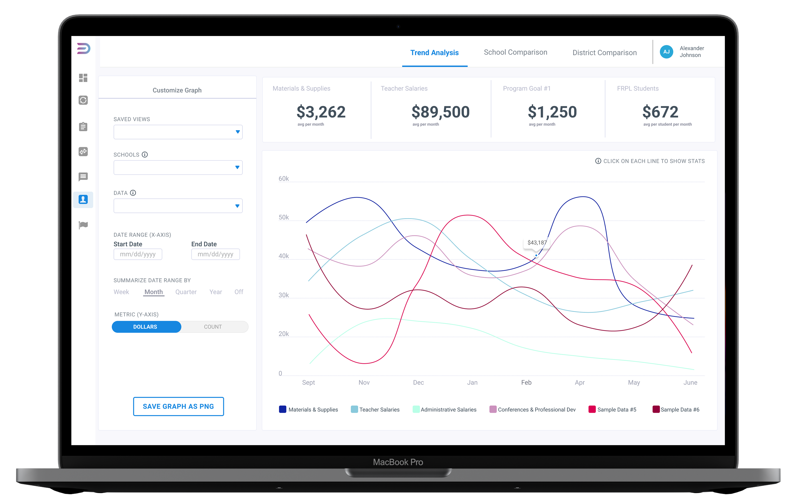
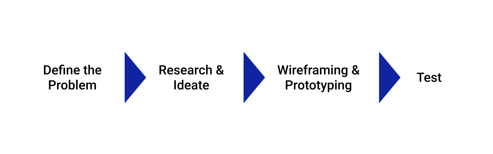
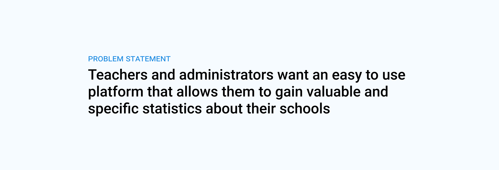
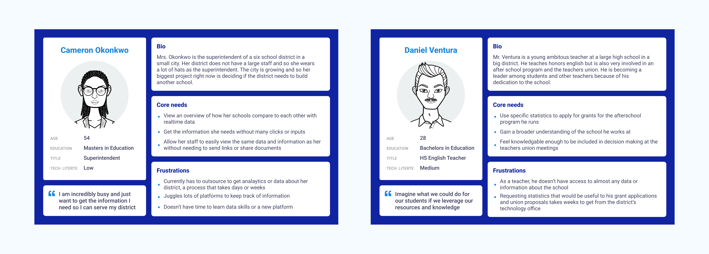
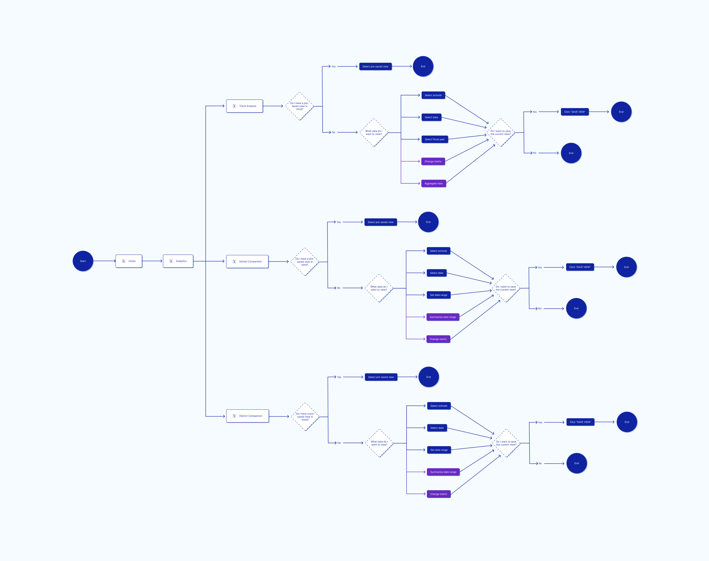
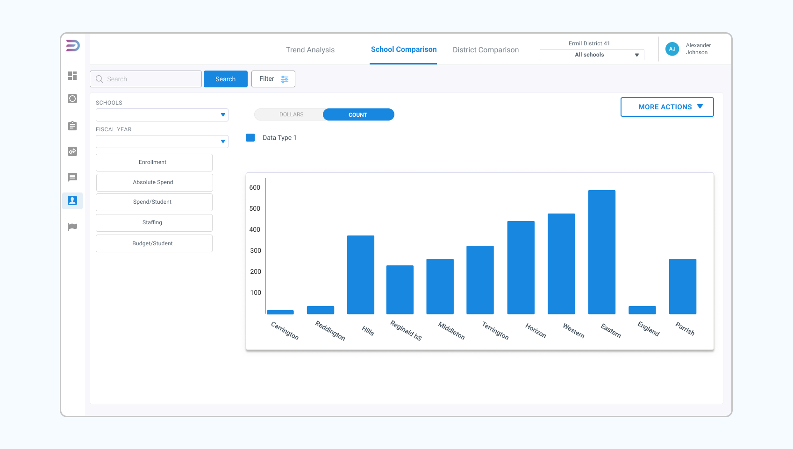
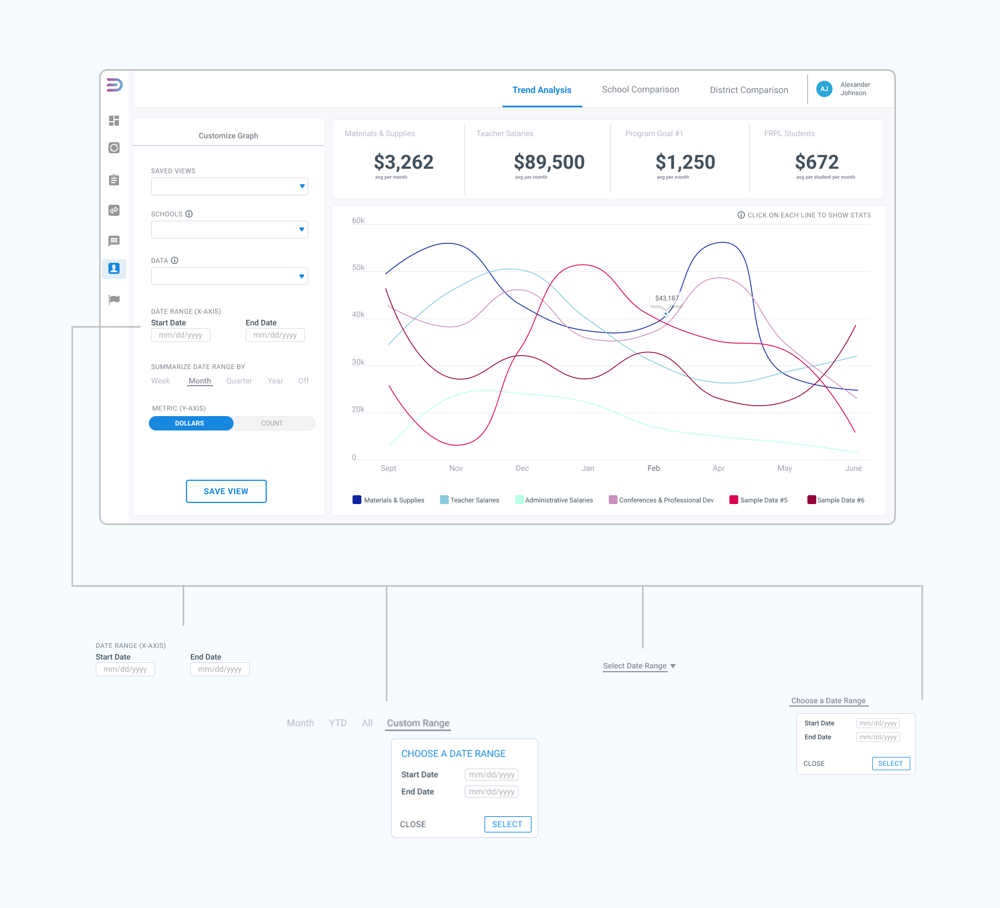
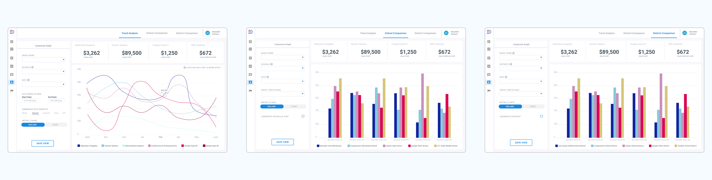

Overview
Edstruments is an early-stage startup focused on adding new analytics and features to their product at a fast pace. While there are a variety of back-end school management tools on the market, most are outdated and unable to perform rigorous financial and HR analytics and insights. I took on the challenge of creating Edstruments’ flagship analytics dashboards to set our product apart.
Given an abstract idea and a very rough wireframe, I created the final prototypes of three dashboards that were produced by Edstruments’ development team and deployed to users. Propelled by its tech-forward reputation and product, Edstruments has continued to grow to new school districts through 2021 and 2022.
Year
2021 - present
Skills
UI & UX Design
Wireframing
Data Visualization
Tools
Python
Figma
Design Process
As my first big project for Edstruments and the only designer on the team, this whole project felt like I was shooting ideas into the dark sometimes. The design principle of iteration helped me keep my focus on designing the product quickly and integrating consistent feedback into my work.

Define the Problem
The CEO of Edstruments came to me with the vision for a product that would be at the cutting-edge of education database management. Throughout discussion with the CEO and Head of Engineering, I developed a problem statement to guide both my design work and the vision of the company in our next development sprint.

Groundwork (Research & Ideate)
As I was building the first dashboard of the Edstruments product, there was not a playbook for UI. At this research stage of the process, I did a lot of competitor and user research to get a better idea of our vision. The results of this work were an extensive vision board of competitor and industry-standard dashboards, and a series of user personas. I also began the process of user mapping in this stage, but continued to iterate on the user journey map as I moved into wireframing and prototyping.


Final iteration of the user flow. A major goal during the design of the UX was to keep user flow as uniform as possible across the three different dashboards to lower learning curves for non-technical users.
Iterate (Wireframe & Prototype)
At the beginning of Edstruments, a brief outline of what an eventual dashboard might look like was created. I used this bare bones design as a jumping off point. The final design was the result of several weeks of iteration on various components and overall layout.
The focus during the creation of the UI was to allow for clearer usability and cleaner visual appeal. With all customization options moved to the left and precisely labeled, the user is better able to focus on the data they came to the dashboard to view. Spacing and shadows have all been fixed, and I worked with the CEO to identify unnecessary elements, such as the search bar, and identify missing essential components a user would need, such as most of the elements.

The sample dashboard idea given to me at the beginning of this project.

Iteration on the date range selector.

The final three dashboards.
A major UX addition to the dashboards were the summary statistics. I made this change to better focus users’ attention on data that matters to them, and allow them to gain insights quickly from the dashboard.
Test & Launch
As a small startup, Edstruments does not have a user testing process for products before launch. Therefore, I look it upon myself to conduct informal user testing with members of the team. I also relied heavily on feedback from the CEO during this stage. Upon presentation of final design to the CEO and Head of Engineering, the three dashboards were moved into development and launched.
My takeaways
- Commitment to the small details and mundane aspects of the design process (user personas, user testing, etc.) are essential to a useable and appealing final product.
- Defining the vision for the product at the beginning of the design process is difficult but neccesary.
- I should and can advocate for my design decisions. This project gave me confidence in my skills as a designer, and set me up to move with conviction through the many additional design projects I have done for Edstruments over the past year.